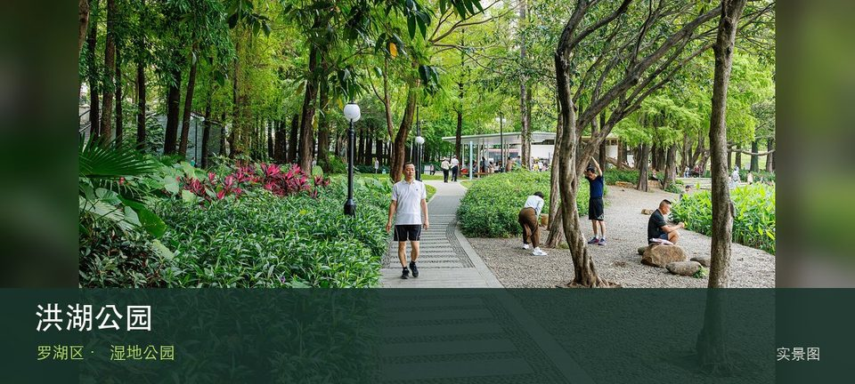

适合谁
适合观鸟、自然教育和安静慢行；不适合携宠、投喂或为拍照进入保育区域。

SHENZHEN GUIDE · 040
洪湖 · 湿地公园
洪湖公园位于文锦北路洪湖片区，大片荷塘、落羽杉水岸和冬季候鸟让同一公园随月份转换主题，季节判断比固定打卡点更重要。现场的空间线索集中在夏季荷花群落和落羽杉水岸，把两者连起来看，才不会只剩一个笼统印象。观察重点是夏季荷花群落与落羽杉水岸之间的生境关系，而不是追逐动物或进入滩涂取景。保持距离、不投喂，并把水位、蚊虫、暴晒和雷雨作为当天是否停留的判断条件。
WHY GO
适合观鸟、自然教育和安静慢行；不适合携宠、投喂或为拍照进入保育区域。
第一次到洪湖公园先把夏季荷花群落设为主目标，再视天气和现场边界决定是否前往落羽杉水岸；返程节点应在出发前确定。
公共交通先到文锦北路洪湖片区，再以洪湖公园公开参观入口为终点；多入口地点须按计划游线选择入口，并预先锁定返程站点。
导航至洪湖公园官方开放入口配套或邻近正规公共停车场；周末满位即改乘公共交通，不在绿道口、村道或消防通道临停。
11 月至次年 3 月通常更适合观鸟；春夏注意蚊虫、暴晒、雷雨与水位变化，不进入生态保育区域。
NEARBY IDEAS